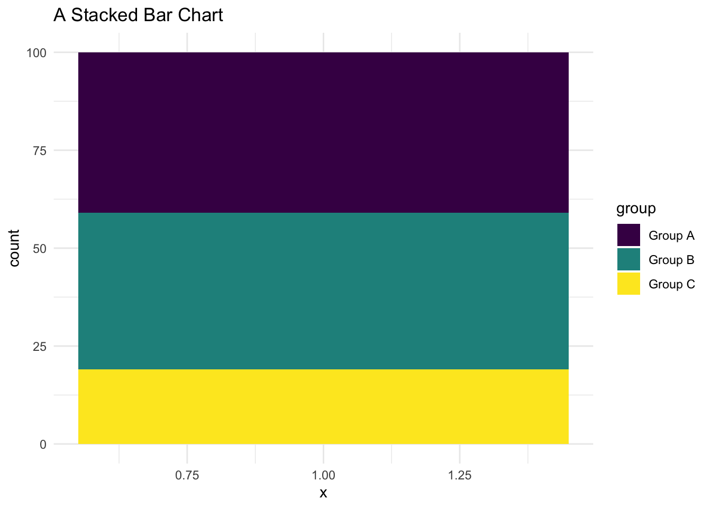
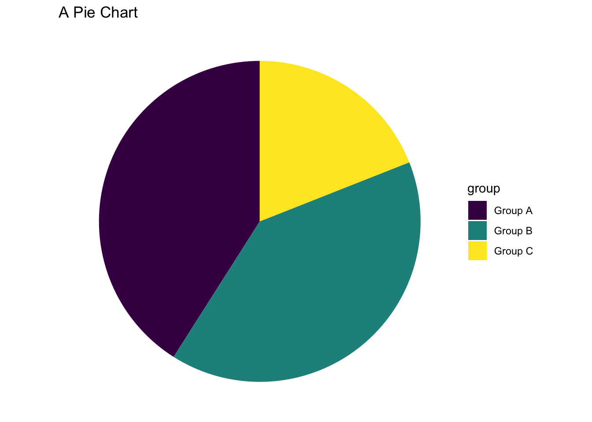

Show the code
# call necessary libraries
library(ggplot2) # beautiful graphs
library(pander) # nice tables
library(tibble) # new data frames
library(DiagrammeR) # digramsIn this document, I talk about bar charts, stacked bar charts, and pie charts. I want to focus on the conceptual relationships between these kinds of graphs, using the idea of grammar of graphics.
These graphs were made in
ggplot2. The code for each graph is provided, as it may be useful for some audiences, but the focus here is really on the relationships between these graphs, and the advantages and disadvantages of different graphing strategies in terms of telling a story with the data. Those not interested in the intricacies ofggplotmay feel free to ignore the code.
# call necessary libraries
library(ggplot2) # beautiful graphs
library(pander) # nice tables
library(tibble) # new data frames
library(DiagrammeR) # digramsHere is what the beginning of the data looks like.
N <- 100
group <- sample(c(0:2),
N,
replace=TRUE,
prob=c(0.4, 0.4, 0.2))
group <- factor(group,
levels = c(0, 1, 2),
labels = c("Group A", "Group B", "Group C"))
mydata <- tibble::tibble(group)
pander(head(mydata, 10))| group |
|---|
| Group B |
| Group B |
| Group B |
| Group C |
| Group A |
| Group A |
| Group C |
| Group B |
| Group A |
| Group A |
We start with a simple bar chart.
If you are following the ggplot code, you will note that ggplot rapidly becomes very verbose.
The essential detail to focus on is the aesthetic, aes, which tells ggplot what dimensions of the data are being mapped on to what specific elements of the graph. The data we are using only has 1 dimension: of what group is each individual a member?
Much of the verbosity of ggplot comes from telling ggplot about the labels, fill colors, and theme.
ggplot(data = mydata,
aes(x = group, # x is the group
fill = group)) + # fill is also the group
geom_bar() + # draw with bars
labs(title = "A Bar Chart") + # labels
scale_fill_viridis_d() + # pretty colors
theme_minimal() # minimal theme
I’m going to rely on Wilkinson’s idea of a Grammar of Graphics. Wilkinson talks about such a grammar being characterized by has a relationships which I have indicated here with \(\leftarrow\) symbols.
So, for example, this graph has an x axis, and a y axis, and color.
The x axis in this graph denotes group, as does the color of the graph.
The y axis represents the count of group.
So the grammar of this graph might look something like the following:
Advantages: Simplicity. Straightforwardness. Easy to compare the height of the different bars.
Disadvantages: Not the most exciting graph in the world.
We make a simple change to the bar chart to produce a stacked bar chart.
ggplot(data = mydata,
aes(x = 1, # x is 1 for everyone
fill = group)) + # fill is the group
geom_bar() + # draw with bars
labs(title = "A Stacked Bar Chart") + # labels
scale_fill_viridis_d() + # pretty colors
theme_minimal() # minimal theme
Now the bars are not distributed along the x axis, but stacked on top of each other.
The y axis still represents the count of group.
But now the x axis in this graph does not really provide much information, and only color of the graph tells us about the group
Advantages: Looks different than a traditional bar chart. The stacking of the bars may give us a sense of the relative contribution of each group to the overall total.
Disadvantages: We can no longer directly compare the height of the bars. This chart may therefore be difficult to interpret in some cases.
A pie chart is just this stacked bar chart transformed (or wrapped into a circle) by using polar coordinates:
ggplot(data = mydata,
aes(x = 1, # x is 1 for everyone
fill = group)) + # fill is also the group
geom_bar() + # draw with bars
labs(title = "A Pie Chart") + # labels
coord_polar(theta = "y") + # polar coordinates
scale_fill_viridis_d() + # pretty colors
theme_void() # void theme
Advantages: Despite the invective directed at pie charts, pie charts may also have the advantage of looking different than a traditional bar chart. The circular arrangement of the pie slices may give us a sense of the relative contribution of each group to the overall total.
Disadvantages: We can no longer directly compare the height of the bars. Angles of pie slices may be more difficult to interpret than heights of bars, particularly when there are many slices. Labels may be difficult to add to pie charts, particularly in ggplot.